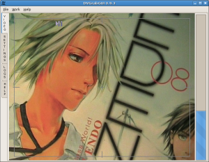

|
Window menus… |
Video Window… |
|

Video Small Window… |
Capture Settings Window… |
|
Hardware Settings Window… |
GUI Settings Window… |
(c) 2006, 2007, 2008 Bastien Montagne (montagne29 at wanadoo dot fr).
Project hosted at sourceforge.net/projects/dvgrabgui.